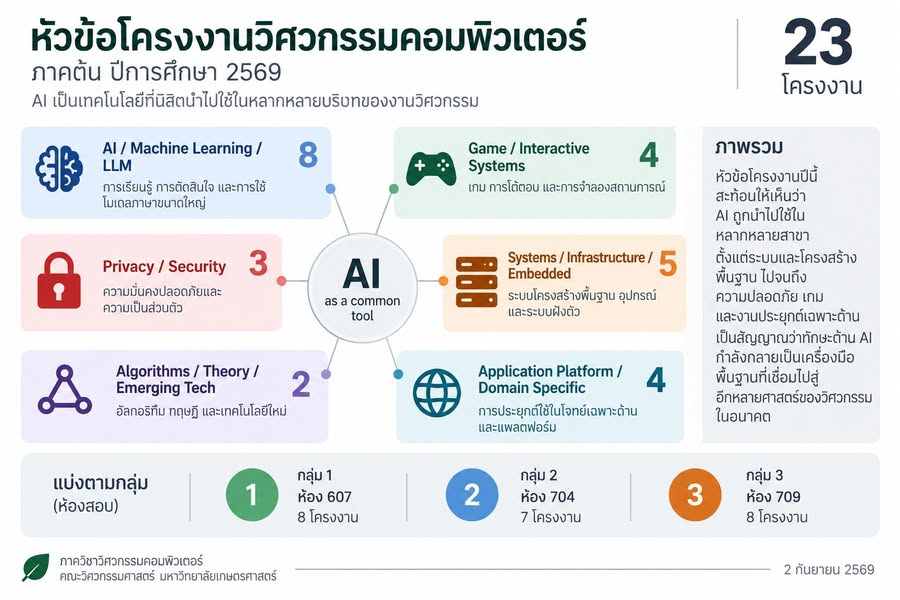

เมื่อ AI กลายเป็นทักษะร่วม วิศวกรยังต้องลึกในศาสตร์ของตัวเอง
{kind=link}

การสอบเสนอหัวข้อโครงงานวิศวกรรมคอมพิวเตอร์ ภาคต้น ปีการศึกษา 2569 มีทั้งหมด 23 โครงงาน สิ่งที่เห็นชัดคือ AI กลายเป็นแกนความสนใจ ตั้งแต่ Reinforcement Learning, LLM, AI agent, AI safety และ Machine Learning ไปจนถึงการใช้ AI กับเกม ระบบแนะนำ การวางเส้นทาง และงานประยุกต์เฉพาะด้าน
แต่แกนดั้งเดิมของวิศวกรรมคอมพิวเตอร์ยังอยู่ครบ ทั้ง Kubernetes, cluster สำหรับ LLM, embedded system, LoRa, privacy, security, algorithm และ quantum network ภาพที่เกิดขึ้นจึงไม่ใช่ AI เข้ามาแทนทุกอย่าง แต่คือ AI เริ่มถูกใช้ร่วมกับความรู้หลายแขนงอย่างเป็นธรรมชาติ
23 โครงงาน แต่หนึ่งหัวข้ออาจอยู่ได้หลายกลุ่ม
ภาพรวมแบ่งหัวข้อเป็น AI/Machine Learning/LLM, Game/Interactive Systems, Privacy/Security, Systems/Infrastructure/Embedded, Algorithms/Theory/Emerging Tech และ Application Platform/Domain Specific จำนวนในแต่ละกลุ่มไม่ควรนำมาบวกรวมเป็นจำนวนโครงงาน เพราะหัวข้อหนึ่งอาจสะท้อนได้หลายด้าน
การทับซ้อนนี้เองเป็นสัญญาณสำคัญ: AI ไม่ได้แยกตัวเป็นเกาะ แต่กำลังกลายเป็นเครื่องมือพื้นฐานที่เชื่อมงานหลายประเภท ตั้งแต่ระดับระบบและโครงสร้างพื้นฐาน ไปจนถึงความปลอดภัย เกม และงานประยุกต์เฉพาะทาง
ถ้ามองต่อไปยังวิศวกรรมสาขาอื่น
ลองนึกถึงนิสิตที่มีความรู้ลึกด้านเครื่องกล ไฟฟ้า โยธา อุตสาหการ เคมี สิ่งแวดล้อม หรือทรัพยากรน้ำ และในเวลาเดียวกันก็มีทักษะ AI ใกล้เคียงกับที่นิสิตวิศวกรรมคอมพิวเตอร์ใช้อยู่ในวันนี้
คนเหล่านี้น่าจะมองเห็นโจทย์บางอย่างที่คนทำ AI อย่างเดียวมองไม่เห็น เพราะเข้าใจระบบจริง ข้อจำกัดจริง และผลกระทบของการตัดสินใจในสาขาของตน ขณะเดียวกันก็สามารถสร้างวิธีแก้ที่คนในสาขาเดิมซึ่งไม่คุ้นกับ AI อาจทำได้ยาก
เมื่อทุกคนใช้ AI เป็น สิ่งที่แยกคนออกจากกันคือความเข้าใจปัญหา
ความรู้เฉพาะสาขายังคงสำคัญ และอาจยิ่งสำคัญขึ้นเมื่อเครื่องมือ AI เข้าถึงง่าย ความแตกต่างอาจไม่ได้อยู่ที่ใครเปิดใช้ AI ได้ แต่อยู่ที่ใครเข้าใจปัญหาจริงมากพอจะรู้ว่าควรใช้ AI ตรงไหน ใช้อย่างไร และเมื่อไรไม่ควรใช้
อย่างไรก็ตาม คนที่เข้าใจ AI น้อยเกินไปก็มีข้อจำกัดอีกแบบ เพราะอาจมองไม่เห็นวิธีแก้ใหม่ ประเมินศักยภาพของเครื่องมือผิด หรือไม่สามารถตรวจสอบข้อจำกัดและความเสี่ยงของระบบที่นำมาใช้ได้
AI-Integrated Engineering ไม่ใช่การทำให้สองด้านบางลง
นี่คือหนึ่งในแนวคิดที่นำไปสู่ AI-Integrated Engineering Program หรือ AIEP จุดหมายไม่ใช่เอา AI ไปแทนหลักสูตรวิศวกรรมเดิม แต่คือการออกแบบให้ความลึกของแต่ละสาขาเชื่อมกับทักษะ AI โดยไม่ทำให้ทั้งสองด้านกลายเป็นความรู้เพียงผิวบาง
โจทย์จึงไม่ใช่ว่าเราจะผลิต “วิศวกร” หรือ “คน AI” แต่คือทำอย่างไรให้คนคนเดียวลึกพอในศาสตร์ของตัวเอง และเก่ง AI พอที่จะพาศาสตร์นั้นไปได้ไกลกว่าเดิม
อนาคตอาจไม่ได้อยู่ที่การเพิ่มสาขาใหม่
การศึกษาวิศวกรรมในอนาคตอาจไม่จำเป็นต้องตอบทุกการเปลี่ยนแปลงด้วยการตั้งสาขาใหม่ แต่อาจต้องทำให้เส้นแบ่งระหว่างสาขาเดิมบางลง เปิดพื้นที่ให้ความรู้ เครื่องมือ และโจทย์จริงไหลข้ามกันได้มากขึ้น
หัวใจคือ เส้นแบ่งระหว่างสาขาบางลงได้ แต่ความลึกของแต่ละศาสตร์ต้องไม่บางตามไปด้วย เพราะ AI ที่ไม่มีความเข้าใจบริบทอาจให้คำตอบที่ดูดีแต่ใช้จริงไม่ได้ ขณะที่ความเชี่ยวชาญเฉพาะทางซึ่งไม่เชื่อมกับเครื่องมือใหม่ก็อาจไปได้ไม่ไกลเท่าที่ควร
อ่านต่อเกี่ยวกับ AIEP AI ต้องวางอยู่บนความรู้จริงของสาขา แนวคิด AI-Integrated Engineering ที่ไม่ลดทอนความลึกของ domain knowledge